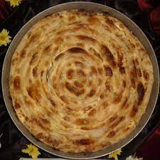

Pite Recipe

The one traditional dish every Albanian loves
A puffy savery dish that is eaten in the balkans all year long
Ingredients
Dough
- 5dl of lukewarm water
- 9dl of flour
- half a tea spoon of salt
Filling
- 400g of mince meat
- 3 - 4 onions
- 1 tea spoon of cayan peper
- 1 tea spoon of salt
Steps
- Charamelize onions in a pan. Add Cayan pepper and salt according to your own preferences. Then add the minced meat
- Work the dough until it doesn't stick onto your hands or the bowl. Cut the dough into thirds and roll them out to about 30cm in diameter. Spread a bit of oil onto the dough pieces.
- Spread the minced meat on the dough into two lines. Use the table cloth to roll the dough into a sausage shape. Cut each of the rolls into fourths so that each piece is about the size of a doughnut. Put the pieces onto a baking tray and spread a bit of oil on them.
- Cook them for 10 minutes in 300 degrees. Enjoy while warm